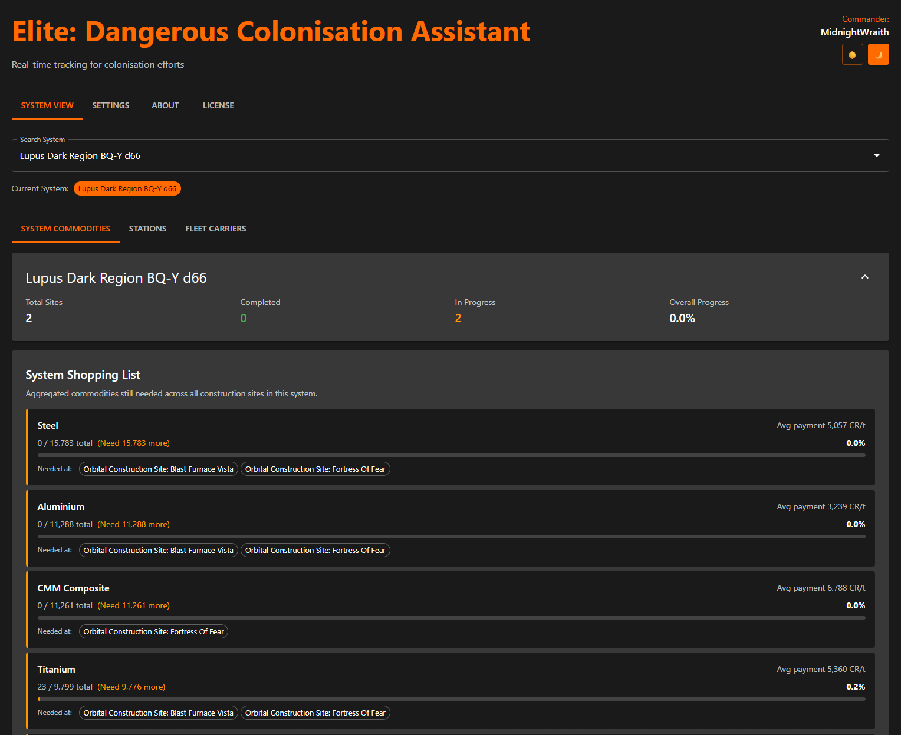
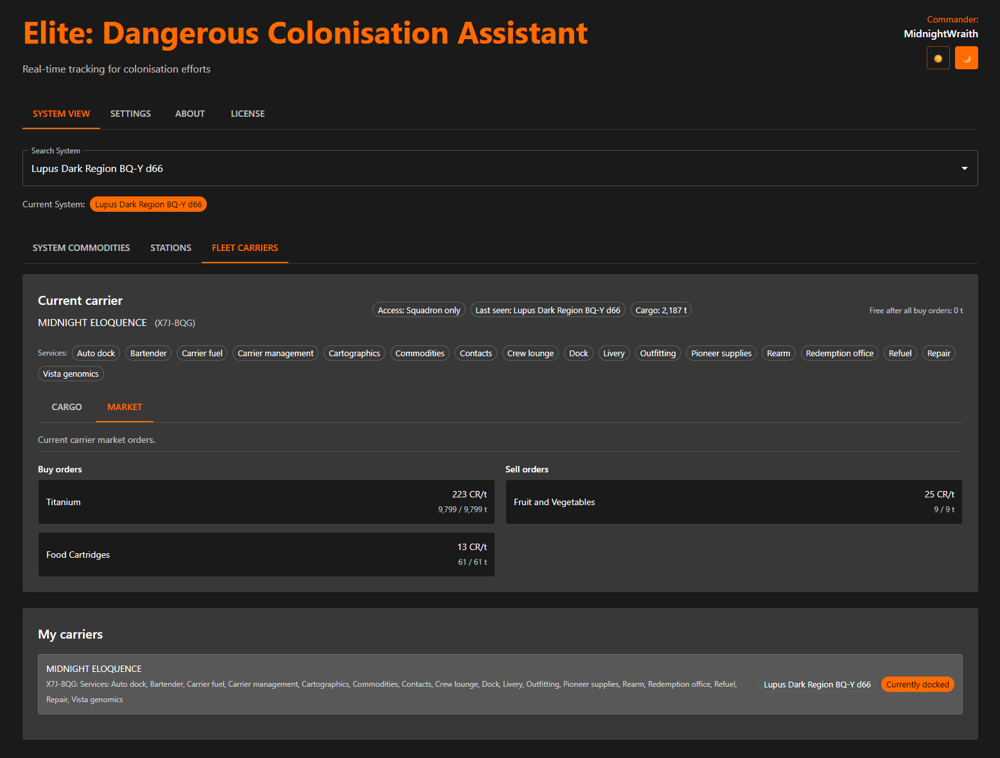

Elite Dangerous Colonisation Assistant
A local, browser-based HUD that tracks your Elite Dangerous colonisation construction sites and fleet carrier logistics automatically from your journal. No spreadsheets, no accounts, nothing leaves your PC.
Windows and Linux · runs locally in your browser at 127.0.0.1:8000
EDCA reads your Elite Dangerous journal as you play and keeps your colonisation state current on its own. No spreadsheets and no manual entry.
Every commodity still needed across all construction sites in a system, aggregated into one list with progress, average payment and where each is needed. Watch it go green on full delivery.
Your carrier's cargo, market buy and sell orders and capacity breakdown in one place, rebuilt from your journal and Market.json.
Per-system station state, your visits and base landings, tracked from local data as you explore and build out a colony.
A lightweight web HUD you can open on a second screen or a cockpit tablet over your own network, with a keep-screen-awake option for long sessions.
EDCA runs entirely on your machine. No external services, no accounts and no telemetry; it reads your journal and nothing else leaves your PC.

System view: the shopping list of commodities still needed across a system's construction sites.

Fleet carrier view: cargo, market orders and capacity, rebuilt from your journal.
On Windows, run the installer from the Releases page. On Linux, use the helper script for your distribution.
EDCA starts a local web server and opens your browser at 127.0.0.1:8000/app. There is nothing to sign in to.
It reads your journal straight away and keeps the colonisation and carrier views current as you fly.
Open the same address with your PC's network IP from a tablet on your Wi-Fi and mount it beside the cockpit.
Elite Dangerous on PC or Linux
with Horizons and Odyssey (the Trailblazer colonisation update)Any modern browser
Chrome, Edge, Firefox or SafariWindows or Linux
installer for Windows; helper scripts for Linux. macOS is untestedOptional second screen
a tablet beside the cockpit for immersionEDCA (Elite Dangerous Colonisation Assistant) is a free, local, browser-based HUD that tracks your Elite Dangerous colonisation construction sites and fleet carrier logistics automatically from your journal.
No. It runs entirely on your machine, reads your local journal and has no accounts, no cloud and no telemetry.
Windows and Linux. There is an installer for Windows and helper scripts for several Linux distributions. macOS is untested.
Per-system colonisation construction sites and their aggregated commodity shopping lists, station state and your fleet carrier's cargo, market orders and capacity, all from your journal.
Yes. EDCA serves a browser HUD on your local network, so you can open it on a tablet or phone on the same Wi-Fi and mount it beside your cockpit, with a keep-screen-awake option.
No. Elite Dangerous journals are local to each player, so EDCA tracks your own contributions only.